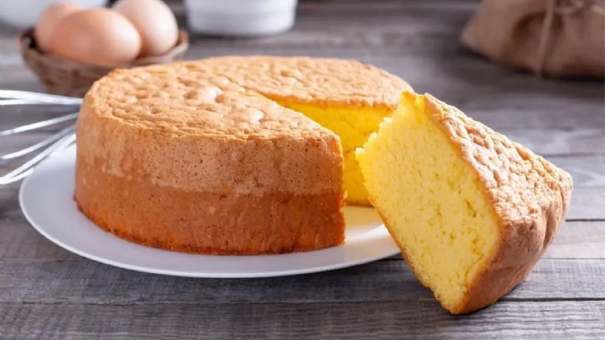

Bizcochuelo de Vainilla
Esponjoso y aromático, este bizcochuelo es la base perfecta para tortas o simplemente para acompañar un mate o café.
Autor
Lautaro Martínez
Lautaro Martínez es un chef creativo y apasionado por la cocina, conocido por su habilidad para transformar ingredientes simples en experiencias gastronómicas memorables. Su estilo combina técnicas clásicas con innovación, ofreciendo platos que sorprenden tanto por sabor como por presentación.
Ingredientes
Para el Bizcochuelo
- 4 huevos
- 200 g de azúcar
- 200 g de harina leudante
- 1 cucharadita de esencia de vainilla
- 100 ml de leche
- 100 ml de aceite
Receta
- Batir los huevos con el azúcar hasta que la mezcla duplique su volumen.
- Agregar la vainilla, la leche y el aceite, mezclando suavemente.
- Incorporar la harina tamizada en forma envolvente.
- Verter la mezcla en un molde enmantecado y enharinado.
- Hornear a 180 °C durante 40 minutos o hasta que al pinchar salga limpio.
- Dejar enfriar y desmoldar.
- Servir solo o espolvoreado con azúcar impalpable.
Califica esta receta y deja tu opinión
Selecciona una calificación